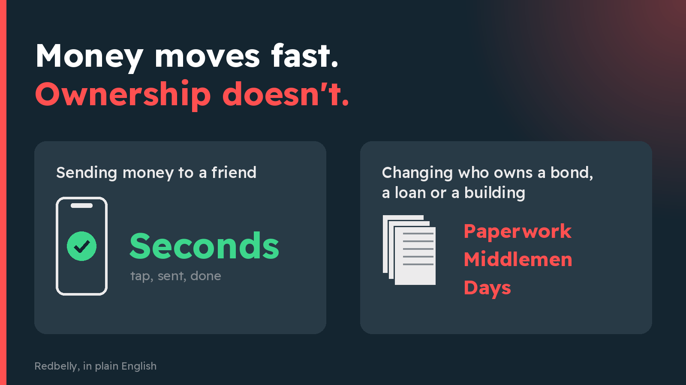
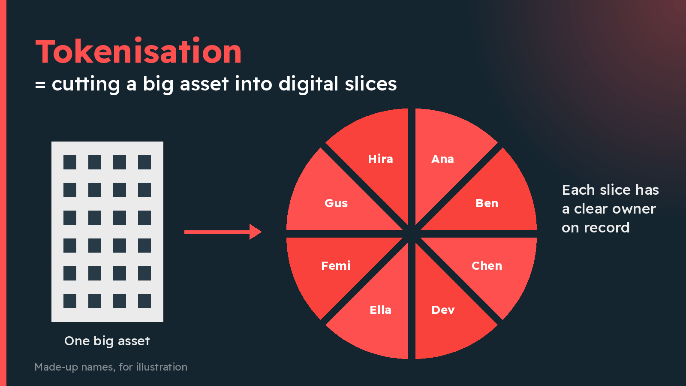
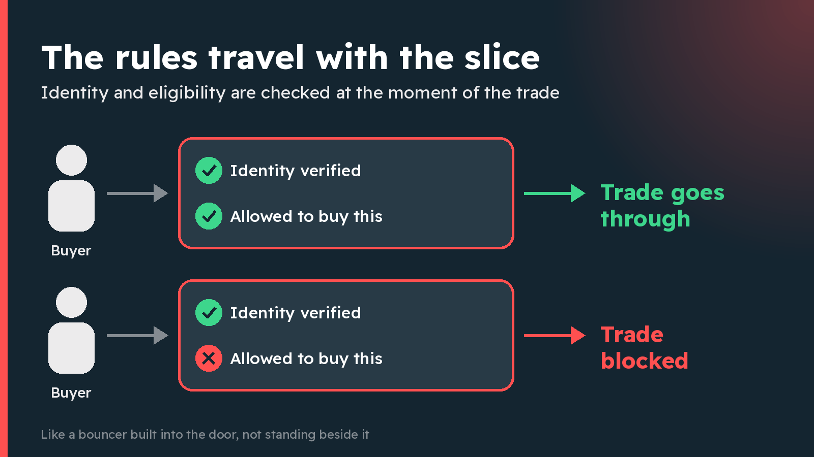
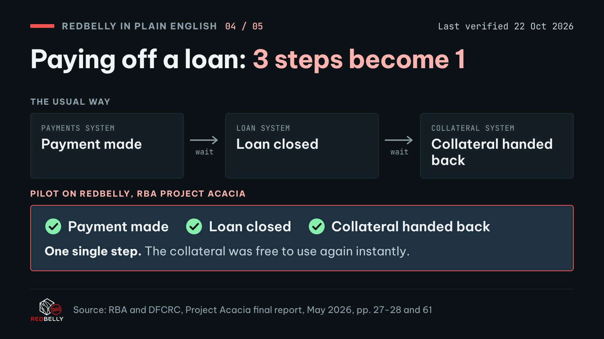
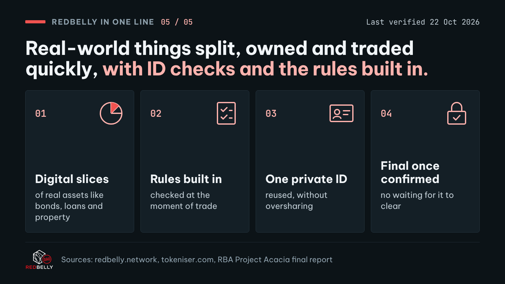

Ten posts, in order, as one thread. Every post below has its own copy button, so nothing has to be retyped.
Press Copy text on post 1 and paste it into a new post on X. Paste each later post as a reply to the one before it.
Where a post has an image, press Download PNG and attach it to that post.
On each image in X, choose Add description and paste the alt text from Copy alt text.
Judging ruleDo not post this before judging ends. The DAO posts the winning entry on its own X account.
The entry
The thread
Written for a friend, a parent or a business owner. No jargon, no price talk, and the source behind every fact is one click away.
01 / 10
Money moves fast, ownership doesn't
269 / 280
You can send money to a friend in seconds.
But changing who owns a bond, a business loan or a slice of a building? That still runs on paperwork, middlemen and "allow 3-5 business days".
Redbelly is an Australian network built to fix that. Here it is in plain English.

Alt textTwo panels side by side. Left: 'Sending money to a friend', marked 'Seconds'. Right: 'Changing who owns a bond, a loan or a building', marked 'Paperwork, middlemen, days'. Heading: 'Money moves fast. Ownership doesn't.'
So what is Redbelly?
A public digital network for keeping track of who owns what, built for real-world things like bonds, loans, property and carbon credits.
Businesses, fund managers and investors all look at the same up-to-date record, instead of each keeping their own copy.
It wasn't dreamt up in a garage.
Redbelly grew out of research at the University of Sydney, working with CSIRO, Australia's national science agency.
Work started in 2016. The public network went live in November 2024.
The big idea has a clunky name: "tokenisation".
Plain version: picture a big asset (a building, a fund, a bundle of loans) as a pizza.
Redbelly lets the owner cut it into digital slices that can be issued, held and traded, each one with a clear owner on record.

Alt textLeft: one building labelled 'One big asset'. Right: the same asset as a pizza cut into eight slices, each tagged with a different made-up owner name. Heading: 'Tokenisation means cutting a big asset into digital slices'.
Here's what makes Redbelly different: the rules travel with the slice.
Many investments are only legally open to certain buyers. On Redbelly, identity and eligibility are checked at the exact moment of the trade.
Like a bouncer built into the door, not standing beside it.

Alt textTwo rows. Top: a buyer passes 'Identity verified' and 'Allowed to buy this', and the trade goes through. Bottom: a buyer fails 'Allowed to buy this' and the trade is blocked. Heading: 'The rules travel with the slice'.
And you don't hand over your passport a hundred times.
Users are verified with a reusable digital ID, so they skip repeating the same checks on every platform.
Clever maths ("zero-knowledge proofs") lets you prove you passed the check without sharing all your personal details.
When a trade is done, it's done.
No "pending" for days. Once a transaction is confirmed on Redbelly, it's final and can't be reversed.
Think handing over cash, not waiting for a cheque to clear.
Has anyone serious tested it?
In Project Acacia, Australia's central bank (the RBA) tested digital money in these markets. Redbelly was one of only three networks used for the RBA's trial digital money.
In one pilot, a company bond was bought with that money, both on Redbelly.
Another pilot on Redbelly shows why it matters.
Paying off a loan usually takes 3 steps in separate systems: payment, loan closed, then the collateral (what backs the loan) handed back.
On Redbelly, all 3 happened in a single step, so the collateral was free again instantly.

Alt textTop, 'The usual way': three separate boxes, 'Payment made', 'Loan closed' and 'Collateral handed back', each in a different system, with a wait between them. Bottom, 'Pilot on Redbelly, RBA Project Acacia': one box that does all three at once. Heading: 'Paying off a loan: 3 steps become 1'.
Why should you care? This is the plumbing behind money and ownership.
Redbelly in one line: real-world things split, owned and traded quickly, with ID checks and the rules built in.
Tokeniser, a platform built on Redbelly, reports A$1.2B issued for 160+ companies and funds.

Alt textSummary card. 'Redbelly in one line: real-world things split, owned and traded quickly, with ID checks and the rules built in.' Four tiles: 'Digital slices of real assets', 'Rules checked at the moment of trade', 'One reusable, private ID', 'Final once confirmed'.
Each failure condition in the brief, and how this entry avoids it.
Rule
Status
How
No banned word or stand-in
PASS
Not used anywhere: posts, alt text, images, documents, file names or code. tools/check_entry.py scans every file in the repo, the PDF and Word text, and all text drawn on the images.
Every fact correct
PASS
11 facts, each traced to public Redbelly, Tokeniser or RBA material. Fact check below. Project Acacia claims rely on the RBA's own final report.
No price talk or advice
PASS
No tokens, prices, returns or buying language. The checker scans posts, alt text and image text for price and advice words.
Licensed assets only
PASS
Images drawn from scratch. Fonts are open licence. Logo from the DAO brand kit. Image source: tools/templates/images.html. Font licences in assets/fonts.
No personal credit
PASS
No names, handles, signatures or made-by lines anywhere in the entry. The checker scans for handles and credit lines.
Fits X
PASS
All 10 posts are 280 characters or fewer, counted the way X counts them. Each post shows its count.
Not posted before judging
PASS
Nothing has been posted to X. The DAO posts the winning entry.
Deliverable 2
Sources
Every fact in the thread comes from one of these public sources, checked on 22 October 2026.
Research start (Dec 2016), the Block8, CSIRO and University of Sydney joint venture (Jun 2021), public network launch (Nov 2024), digital ID credentials (Nov 2024).
S1Redbelly Network Pty Ltd Australia 304/74 Pitt St. Sydney NSW 2000
"Allow 3-5 business days" in post 1 is the everyday phrase people know from bank transfers, used as a hook. It is not presented as a measured fact about any market.
F2One shared, up-to-date recordPosts 2, 4
Thread saysA public network where businesses, fund managers and investors all look at the same up-to-date record.
S1Establish digital registries as a shared source of truth across issuers, managers, and investors.
S6p. 12 lists "Redbelly Network (public)" among the platforms used in the pilots.
"Mainnet" is the live public network, as opposed to its test networks.
F4Tokenisation means digital slices with clear ownersPost 4
Thread saysThe owner can cut a big asset into digital slices that can be issued, held and traded, each with a clear owner on record.
S8[...] financial products and services as digital tokens, and lets you program the rules of the asset. Holders gain fractional ownership, direct custody, atomic settlement, and 24/7 secondary trading
S1Redbelly provides the infrastructure to issue, manage, and distribute regulated digital financial assets to a global investor base.
The pizza is an analogy, not a claim.
F5Eligibility checked at the moment of tradePosts 5, 10
Thread saysMany investments are only legally open to certain buyers. On Redbelly, identity and eligibility are checked at the moment of the trade.
S3[...] verifiable credentials enable tokenised investment products with defined investor eligibility, enforced at the point of trade.
S3[...] programmatically at the point of issuance and trade
S8Tokeniser programs eligibility into every asset at the protocol level: identity, KYC, AML, CTF, wholesale and sophisticated investor tests, and TMD.
The bouncer is an analogy, not a claim.
F6Reusable digital ID with zero-knowledge proofsPosts 6, 10
Thread saysUsers are verified with a reusable digital ID, so they skip repeating the same checks on every platform. Zero-knowledge proofs let you prove you passed without sharing all your details.
S4All users are verified using digital identities and zero-knowledge [proofs] (ZKP), ensuring compliance without compromising personal privacy.
S4With Redbelly, users avoid repetitive KYC checks across multiple platforms.
S3Reusable client identity and KYC credentials streamline onboarding and reduce duplication
S22024 November W3C ZKP Verifiable Credentials inc National IDs released
"Without sharing all your personal details" is the plain-English meaning of "without compromising personal privacy" (S4).
F7Final once confirmedPosts 7, 10
Thread saysNo "pending" for days. Once a transaction is confirmed on Redbelly, it's final and can't be reversed.
S3Deterministic finality ensures transactions are confirmed once and cannot be reversed, providing certainty for financial markets
S4Redbelly Network processes transactions with instant finality, meaning no delays, no pending states [...]
Cash versus a cheque is an analogy, not a claim.
F8One of three networks for the RBA's trial digital moneyPost 8
Thread saysIn Project Acacia, the RBA tested digital money in these markets. Redbelly was one of only three networks used for the RBA's trial digital money.
S7The RBA and the DFCRC released the Project Acacia findings on 18 May 2026. 20 wholesale tokenised asset market use cases were tested.
S6Use cases used three of the short-listed [...] platforms for their experimentation with pilot wCBDC: Australian Payments Plus's (AP+) HashSphere instance [...], Canvas Connect [...], and Redbelly Network [...]. (p. 13)
wCBDC is wholesale central bank digital currency: digital money issued by the RBA for banks and institutions, not the public. The thread calls it "the RBA's trial digital money".
F9A company bond bought with that moneyPost 8
Thread saysIn one pilot, a company bond was bought with that money, both on Redbelly.
S6Australian Bond Exchange piloted secondary market transactions involving the purchase of a tokenised corporate bond digital twin using wCBDC as the settlement asset. Both the tokenised bond and the wCBDC were issued on to the same network. Network listed: Redbelly Network. (p. 57)
F10Paying off a loan: 3 steps become 1Post 9
Thread saysPaying off a loan usually takes 3 steps in separate systems. In the pilot on Redbelly, all 3 happened in a single step, so the collateral was free again instantly.
S6In traditional finance, the lender records the loan in its loan system, and the collateral in its collateral management system. When the customer repays the loan (in full) the following steps occur sequentially [...] (pp. 27-28)
S6[...] the loan repayment, loan discharge and collateral release functions were composed into a single atomic transaction. As a result, collateral could be released instantly and made immediately available for reuse [...] (p. 28)